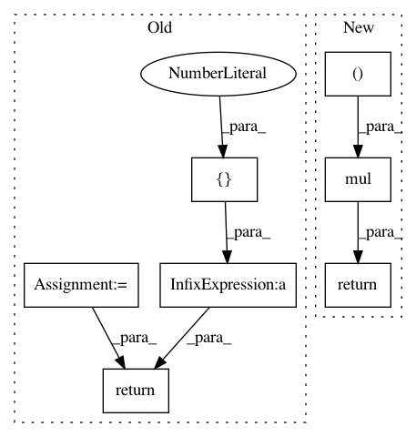

1ffc5ad914da39a369337c1606a8ba788dbf9055,geomstats/geometry/grassmannian.py,Grassmannian,random_uniform,#Grassmannian#Any#,55
Before Change
Returns
-------
basis_change = SpecialOrthogonal(self.n).random_uniform(n_samples)
projector = from_vector_to_diagonal_matrix(
gs.array([1.] * self.k + [0.] * (self.n - self.k)))
return Matrices.mul(
basis_change, projector, GeneralLinear.inverse(basis_change))
def belongs(self, point, tolerance=TOLERANCE):
Check if the point belongs to the manifold.
After Change
New York: Springer-Verlag. 2003, 10.1007/978-0-387-21540-2
points = gs.random.normal(size=n_samples * self.k * self. n)
points = gs.reshape(points, (n_samples, self.n, self.k))
full_rank = Matrices.mul(Matrices.transpose(points), points)
projector = Matrices.mul(
points,
GeneralLinear.inverse(full_rank),
Matrices.transpose(points))
return projector[0] if n_samples == 1 else projector
def belongs(self, point, tolerance=TOLERANCE):
Check if the point belongs to the manifold.
In pattern: SUPERPATTERN
Frequency: 3
Non-data size: 7
Instances
Project Name: geomstats/geomstats
Commit Name: 1ffc5ad914da39a369337c1606a8ba788dbf9055
Time: 2020-08-25
Author: nicolas.guigui@inria.fr
File Name: geomstats/geometry/grassmannian.py
Class Name: Grassmannian
Method Name: random_uniform
Project Name: analysiscenter/batchflow
Commit Name: ac83c1456d57a25460af531606c62596836334cf
Time: 2020-02-06
Author: Tsimfer.SA@gazprom-neft.ru
File Name: batchflow/models/torch/layers/resize.py
Class Name: SEBlock
Method Name: forward
Project Name: analysiscenter/batchflow
Commit Name: ac83c1456d57a25460af531606c62596836334cf
Time: 2020-02-06
Author: Tsimfer.SA@gazprom-neft.ru
File Name: batchflow/models/torch/layers/resize.py
Class Name: ReduceDim
Method Name: forward